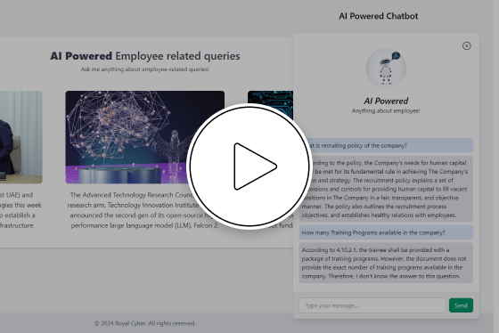
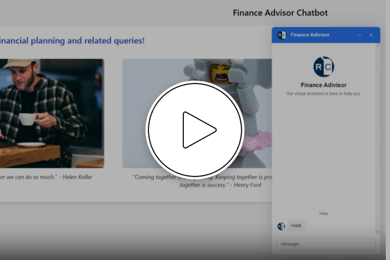

Royal Cyber AI COE use cases in short
Explore Royal Cyber's AI solutions through real-world applications. Discover how our innovative technology transforms businesses across industries.
Sales Forecast
Revolutionize sales forecasting with our AI solution. Analyzing data from sales history, market trends, and customer behavior, our platform delivers precise predictions. Trust in our scalable and adaptable technology, continuously learning for accurate insights. Seamlessly integrate into your systems for effortless implementation. Say goodbye to guesswork, hello to reliable forecasts.
Inventory Optimization

Maximize efficiency with our AI-driven inventory optimization solution. Harnessing data analytics, including sales trends, supplier behavior, and demand forecasts, we ensure optimal stock levels. Our scalable platform adapts to your business needs, continuously refining predictions for accuracy. Seamlessly integrate into existing systems for streamlined operations. Say farewell to overstock and stockouts, and embrace smarter inventory management for sustained success.
Customer Sentimental Analysis

Elevate customer insights with our AI-powered sentiment analysis tool. By parsing customer feedback from various channels, including social media, reviews, and surveys, we provide real-time sentiment analysis. Our scalable solution adapts to your evolving needs, uncovering actionable insights to enhance customer satisfaction. Seamlessly integrate into your existing systems for effortless implementation. Say goodbye to guesswork and hello to data-driven decisions that resonate with your audience.
Supply Chain Replenishment

Transform your supply chain with our AI-driven replenishment solution. Leveraging advanced algorithms, we optimize inventory levels, supplier relations, and demand forecasting for seamless replenishment. Our scalable platform adapts to your business dynamics, ensuring efficient stock management. Seamlessly integrate into existing systems for a frictionless transition. Say goodbye to stockouts and excess inventory, and welcome streamlined replenishment processes that boost productivity and profitability.
Supply Chain Financing
Secure your supply chain finances with our AI-driven invoice amount retention solution. By analyzing payment histories, contract terms, and market trends, we optimize invoice processing for accurate retention amounts. Our scalable platform adapts to your vendor relationships, ensuring fair and consistent retention practices. Seamlessly integrate into existing financial systems for streamlined invoice management. Say goodbye to payment disputes and hello to efficient retention strategies that protect your bottom line.
Supply Chain Provenance

Ensure supply chain transparency with our provenance solution. By tracking product origins, transportation routes, and handling processes, we provide real-time visibility into your supply chain. Our scalable platform adapts to your business complexity, ensuring compliance and risk mitigation. Seamlessly integrate into existing systems for streamlined tracking and traceability. Say goodbye to opaque supply chains and hello to trusted provenance data that enhances brand reputation and customer trust
Transportation Management
Revolutionize your transportation management with our AI-powered solution. By analyzing data on routes, vehicle capacity, and traffic patterns, we optimize logistics for efficiency and cost-effectiveness. Our scalable platform adapts to your business needs, ensuring smooth operations even during peak times. Seamlessly integrate into existing systems for a hassle-free implementation. Say goodbye to delays and inefficiencies, and hello to a streamlined transportation network that drives your business forward.
Preventive Maintenance

Enhance equipment reliability with our AI-driven preventive maintenance solution. By analyzing historical data, usage patterns, and equipment performance, we predict maintenance needs before issues arise. Our scalable platform adapts to your equipment fleet, ensuring optimal uptime and reducing costly downtime. Seamlessly integrate into existing systems for a seamless maintenance workflow. Say goodbye to unexpected breakdowns and hello to proactive maintenance strategies that save time and money.
Rate Of Penetration

Optimize drilling efficiency with our AI-powered Rate of Penetration (ROP) solution. By analyzing real-time data from drilling operations, geological formations, and equipment performance, we enhance drilling speed and accuracy. Our scalable platform adapts to diverse drilling environments, minimizing downtime and maximizing productivity. Seamlessly integrate into existing drilling systems for immediate insights. Say goodbye to slow drilling progress and hello to accelerated operations that drive success in the oil and gas industry
On Premise Custom Chatbot
Revolutionizing how you interact with your customers! Powered by cutting-edge artificial intelligence technology, our on-premise custom AI chatbot is designed to provide seamless and personalized assistance to your website visitors. With a user-friendly interface and advanced natural language processing capabilities, interacting with our chatbot feels like talking to a real person. It learns from every interaction, continuously improving its responses and becoming even more effective over time.
Financial Chatbot
our Financial AI Chatbot is designed to provide seamless and personalized assistance to your website visitors. With a user-friendly interface and natural language processing capabilities, interacting with our chatbot feels like talking to a real person. It learns from every interaction, continuously improving its responses and becoming even more effective over time. Revolutionizing how you interact with your customers! Powered by cutting-edge artificial intelligence technology.
HR Advisor Chatbot
The HR Advisor Chatbot is an innovative solution designed to streamline and enhance human resources interactions within an organization. Revolutionizing how you interact with your customers! Powered by cutting-edge artificial intelligence technology. Leveraging advanced artificial intelligence and natural language processing, this chatbot offers a user-friendly and efficient interface for employees and HR professionals alike.
Fuel Management
A Fuel Management System is designed to optimize fuel consumption and reduce costs for vehicle fleets by providing real-time fuel monitoring, consumption reports, and driver behavior analysis. It integrates with GPS for comprehensive vehicle tracking, enabling route optimization and proactive maintenance scheduling. Benefits include cost reduction, enhanced operational efficiency, increased security, and a reduced environmental impact. Ideal for logistics companies.